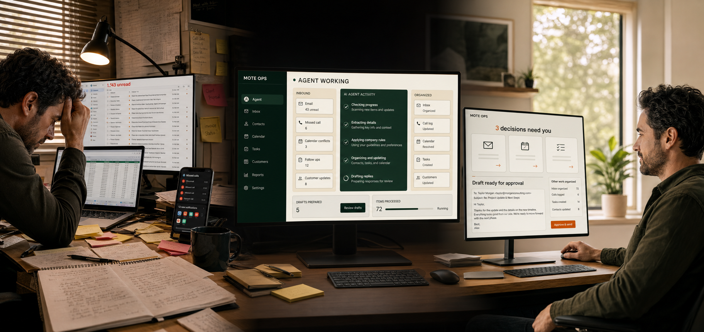

Dana R. · AC not coolingHigh
Address and callback preference missing · draft ready
Why flagged?
After-hours cooling loss, infant mentioned, and two dispatch details missing.
PRACTICAL AI INTEGRATION FOR SMALL BUSINESSES
Mote Ops helps small businesses simplify repetitive work, connect the tools they already use, build practical AI systems, and train the people who use them.

Illustrative demonstration using fictional business information.
START WITH THE FRICTION
Your business may be running on your memory, your inbox, and too many open tabs. Start with the pain you already recognize.
Your inbox has become the company task list.
See a clearer daily view →Leads and follow ups disappear between people and tools.
See a supervised response →Staff keep searching for the same documents and answers.
See a cited answer →Important work depends on what the owner remembers.
See what needs attention →Repetitive updates, reports, and data entry consume the day.
See what can be simplified →You want to use AI but do not know what is worth building.
See how I decide →WHAT I CAN BUILD
I am tool agnostic. I choose the simplest dependable approach that produces the result your business actually needs.
Turn recurring updates, summaries, reminders, and data entry into a dependable flow.
Move useful information between email, forms, calendars, customer records, and internal software.
Give your team cited answers from policies, project files, procedures, and approved business knowledge.
Prepare responses and next actions while a person keeps control of consequential decisions.
Put the status, approvals, and next steps for one workflow in one useful place.
Build practical habits, boundaries, and examples around the work your people already do.
HOW WE WORK
I am Mike Mote. I perform the discovery, design, implementation, and review. You work with one accountable person from the first conversation through the finished system.
See the real workflow and the result you need.
Remove unnecessary steps before automating anything.
Test one bounded solution with the right tools.
Train the people and improve from evidence.
WORKING DEMONSTRATIONS
Choose one real interaction. Every example runs only in this page with fictional information.
Mote Ops Operator demonstration
Customer problem: The owner carries too many priorities in memory. What this proves: A current business brief can be requested from a phone while context and approval boundaries stay attached.
Sample owner brief ready for review.
Private document review demonstration
Customer problem: Staff keep searching for the same information. What this proves: A bounded review can keep every synthetic finding tied to its fictional source.
Model demonstration: Mike's current verified Ollama installation includes qwen3-coder:30b and qwen3:14b. The displayed output is prerecorded and synthetic and makes no live connection.
Scope: Only the three listed fictional source files are included in this bounded review.
One customer update is overdue [Customer Commitments.csv, row 4]. The service policy requires owner review before after-hours dispatch [Northstar Service Policy.pdf, p. 3].
Model and evidence: Prerecorded sample review; each finding is limited to the listed fictional sources.
Status: Ready for review
TRY THE WORKFLOW
Customer problem: A new inquiry arrived after hours with missing details. What this proves: A messy lead can become an owner ready next step without sending or saving anything outside this page.
LEAD ARRIVES
The system reads the messy inquiry, organizes only what is present, and marks what is still unknown.
The message describes loss of cooling during high heat and mentions an infant. The system raises priority for owner review without requesting medical information or promising emergency service.
INTAKE COMPLETES
Dana’s address and callback preference are required before dispatch. The system prepares a reply and waits.
Hi Dana — I’m sorry you’re dealing with this. We may be able to help. What’s the service address, and is text or phone the best way to reach you tonight?
No message is sent in this demonstration.
OWNER BRIEF
Dana joins the same action queue as stalled quotes and routine requests. Open the reasoning, edit the draft, approve it, or skip it.
Try the controls. They change the sample queue but never send anything.
Address and callback preference missing · draft ready
After-hours cooling loss, infant mentioned, and two dispatch details missing.
$4,800 replacement quote opened twice · no response
Requested fall tune-up · contact details complete
CARE HUB DEMONSTRATION
Customer problem: Enrollment steps are scattered across tools and memory. What this proves: A director can keep inquiries, tours, forms, follow ups, and placement in one supervised workspace.
ENROLLMENT PIPELINE
TOUR REQUESTS
REQUIRED FORMS
CLASSROOM PLACEMENT
Care Hub demo ready. Explore the fictional enrollment pipeline.
REAL BUILD · HONEST EVIDENCE
The proof is the work itself, clearly separated from results that are still being measured.
THE MOTE OPS TOOLBOX
Mote Ops selects, connects, and supports the technology that fits your business. You do not need to learn the platforms or decide which model to use.
Move repetitive work reliably between systems.
n8n · Webhooks · Scheduled workflows · APIs
Select intelligence for the task, privacy needs, and budget.
OpenAI · Claude · Codex · Ollama · Private local models
Work around the software your business already uses.
Gmail · Microsoft 365 · Calendars · Forms · Customer software
Put useful work where a person can review and act.
Custom dashboards · Approval queues · Phone access · Operating briefs
Technology changes quickly. Your system should keep working. Mote Ops chooses the tools, connects them to your real workflow, tests the result, and helps your team use it.
Mike’s current Mac installation includes Ollama qwen3-coder:30b and qwen3:14b, canonical operating context, tested project status routing, working phone access patterns, and human approval controls.
The public examples use prerecorded responses and fictional records. There is no live connection to Mike’s Mac, no visitor upload, and no production client data.
Integrations, permissions, retention, model choice, and hardware are configured per client. A local model is one possible tool, not the product.
WAYS TO WORK TOGETHER
The first conversation checks fit. Paid work begins only when there is a bounded problem worth solving.
We decide whether I can help and whether the next step is worth your time.
Map one workflow and recommend simplify, configure, automate, or leave it alone.
Build and test the agreed solution. Larger agent or integration systems are scoped separately.
Monitoring, improvements, training, and evidence review after launch.
Discovery is one phase of the relationship, not the entire Mote Ops product. Continuing is always a separate decision.
FIT AND FAIR QUESTIONS
Mote Ops is built for small teams that want practical help and a human responsible for the result.
You want someone to understand the work, simplify it, build the solution, and help your team use it.
Usually no. I first look for a better configuration or a simple connection between the tools you already have.
No. Bring the business problem. I select the appropriate software, model, automation, or conventional code after the workflow is understood.
Not by default. Customer messages and other consequential actions stay behind the human approval rules we agree on.
Only the access required for the agreed workflow. Synthetic and safely scoped testing comes before production access.
Then I will say so. Simplifying the process, configuring an existing tool, or leaving it alone can be the correct result.
START WITH THE REAL BOTTLENECK
Bring one workflow to a thirty minute conversation. If I am not the right person to help, I will tell you.